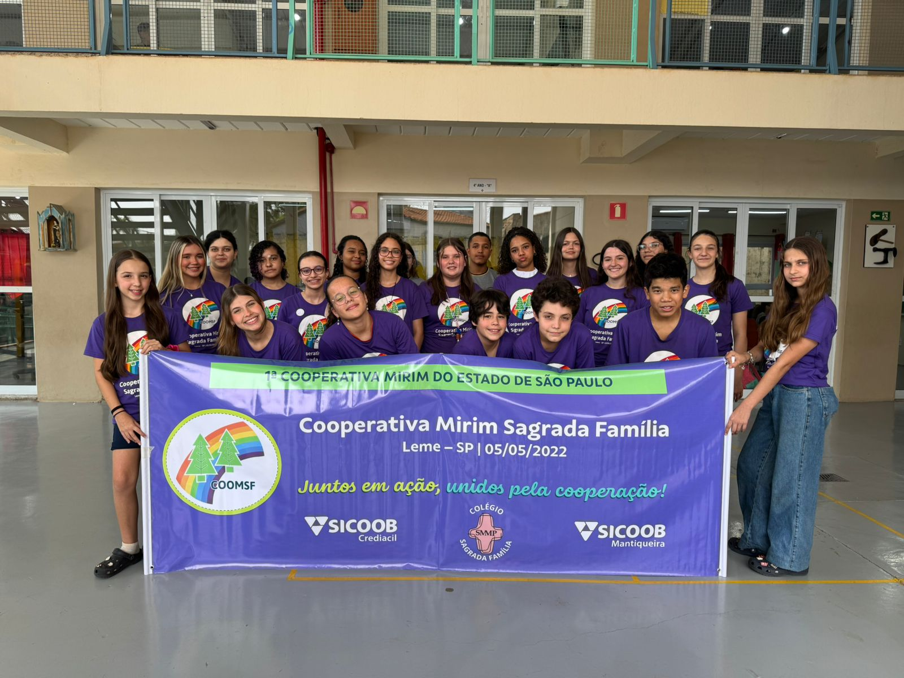

Projeto Cooperativa Mirim
É um espaço de exercício e simulação do cotidiano de uma cooperativa para crianças e adolescentes, oportunizando aprendizado e vivência prática sobre a filosofia cooperativista e processos que envolvem uma cooperativa.
O Programa Cooperativa Mirim, que acontece com a parceria do Sicoob Crediacil e Sicoob Mantiqueira, tem finalidade educacional e se ampara no Estatuto da Criança e do Adolescente – Lei nº 8.069, de 13 de julho de 1990, e na Lei nº 5764/71, que define a Política Nacional de Cooperativismo.
A metodologia ocorre de forma transversal e interdisciplinar e tem como objetivo o desenvolvimento de competências, hábitos e atitudes por meio de práticas pedagógicas que disseminam os princípios do cooperativismo, harmonizando-os aos interesses com a comunidade, obtendo responsabilidades sociais, morais e coletivas dentro e fora do ambiente escolar.